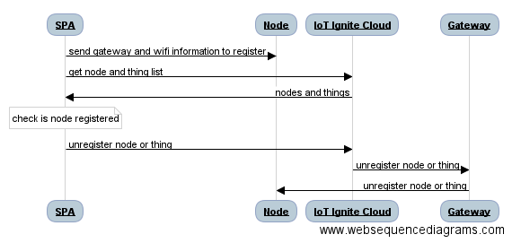

Sequence Diagram

Discover
To discover Ignite nodes nearby, list the Wifi ssids and filter the ones with the IotIgnite prefix. Note that unregistered nodes wait for connections in Wifi hotspot mode as gateways do.
var filter = "IotIgnite";
NetworkService.listWifi(function(wifi){
var igniteWifiArray = NetworkService.filterWifi(wifi, filter);
}
Register
After selecting registered gateway from your service nearby, it is time to register node(s).
Get Device Details
$http({
method: 'GET',
headers: {
'Authorization': 'Bearer ' + accessToken
},
url: API_URL + '/device/' + deviceCode
})
Connect to that node with the help of the WifiWizard plugin handled in Network Service
After connecting to node, send configuration that contains its identifier, gateway id and internet connection information(ssid, password) to it via HTTP post request.
var configurations = "node-configurations=" + '{"node-configurations":{"nodeId":"' + nodeId + '","gatewayId":"' + gatewayId + '","ssid":"' + ssid + '","password":"' + pass + '"}}';
$http({
method: 'POST',
data: configurations,
headers: {
'Content-Type' : 'application/x-www-form-urlencoded;'
},
url: "http://192.168.4.1/node-configurations"
});
After configuration is sent successfully, it is time to check that this node is registered to Service Provider's IoT-Ignite Platform. This could be done via IoT Ignite cloud REST API.
$http({
method: 'GET',
headers: {
'Authorization': 'Bearer ' + accessToken
},
url: API_URL + '/device/' + deviceId + "/device-node-inventory"
});
Unregister
Registered node and things can be unregistered as follows;
$http({
method: 'POST',
data:{
"params": [
{
"nodeId": nodeId,
"sensorId": thingId
}
]
},
headers: {
'Authorization': 'Bearer ' + accessToken
},
url: API_URL + '/device/' + deviceId + '/control/unregister-node-thing'
});